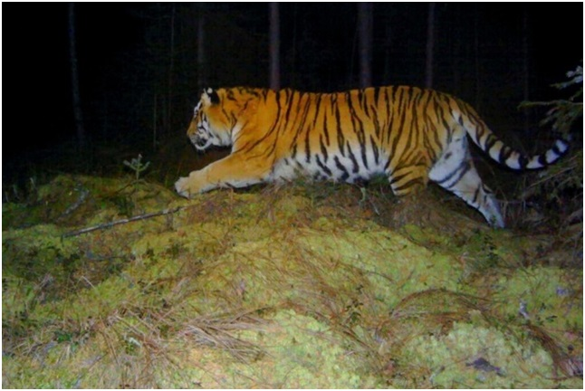
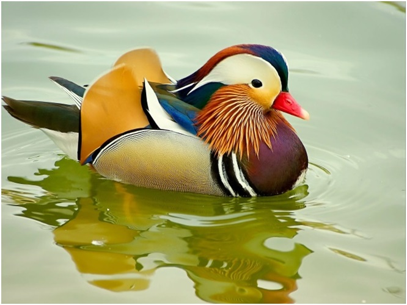
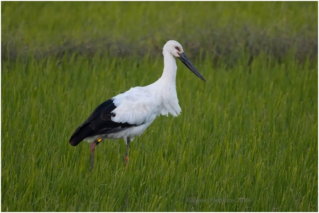
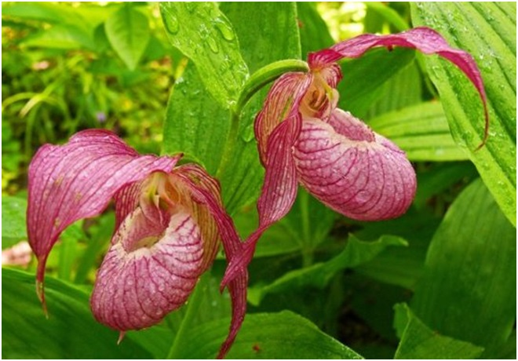

7. Государственный природный Заповедник «Бастак»
Заповедник находится севернее города Биробиджан. Его территория представлена компактным участком общей площадью в 91771 га. Южная граница проходит на расстоянии 15 км от центра Еврейской автономной области.
Территория заповедника почти поровну делится на горную и равнинную части. Горная часть расположена на северо-западе заповедника и представлена юго-восточными отрогами Хингано-Буреинской горной системы. Северная граница заповедника пролегает по водораздельным хребтам, где находятся наиболее высокие вершины – г. Быдыр (1207 м), г. Туколали (1103 м) и г. Балябинская (893 м). В южном направлении рельеф заметно понижается, горные склоны становятся сглаженными, постепенно переходят в холмистую местность с небольшими превышениями плоских и округлых вершин над широкими долинами. В центральной части заповедника горный рельеф плавными увалами сменяется Среднеамурской низменностью.
В базе данных сосудистых растений заповедника – 636 видов, 30 из них внесены в Красные книги ЕАО и РФ. Для заповедника характерны различные типы растительности, основными являются лесной в северо-западной части и лугово-болотный на юго-востоке.
На вершине г. Быдыр и открытом горном плато прилегающего к ней хребта представлена тундроподобная растительность со значительным количеством мхов, лишайников, кустарничков. У северной границы на высоте более 700-800 м над уровнем моря преобладают елово-пихтовые леса. В среднем поясе гор произрастают кедрово-широколиственные леса. Это самая богатая по разнообразию растительного и животного мира часть заповедных лесов, где с северными древесными породами соседствуют типично южные растения. Южные и западные районы богаты дубняками, лиственничниками, березняками. В этих лесах велико обилие липы амурской – самого известного медоноса дальневосточной тайги.
Равнинная часть представлена комплексом лугов, осоковых и моховых болот.
Животный мир заповедника представляет собой сочетание представителей фаун юга и севера Дальнего Востока. Из позвоночных животных на территории заповедника обитают 42 вида млекопитающих, 197 видов птиц, 3 вида рептилий, 7 видов амфибий, 26 видов рыб.
Особую ценность представляет черный журавль, гнездящийся в долинах рек Бастак и Большой Сореннак, а также дальневосточный аист, мандаринка, скопа, хохлатый осоед, а также дикуша.
Кластерный участок «Забеловский» расположен в левобережной пойме р. Амур, в 40 км к западу от г. Хабаровска. Территория кластера представляет собой заболоченную осоково-вейниковую равнину с дубово-осиновыми редколесьями на возвышениях. В заказнике произрастают более 250 видов сосудистых растений. Здесь встречаются 24 вида растений, внесенных в Красную книгу ЕАО и 8 – в Красную книгу Российской Федерации.

Амурский тигр Panthera tigris altaica (занесен в Красную книгу ЕАО)

утка Мандаринка Aix galericulata (занесена в Красную книгу ЕАО)

Дальневосточный аист Ciconia boyciana (занесен в Красную книгу ЕАО и России)

Венерин башмачок крупноцветковый Cypripedium macranthon (занесен в Красную книгу ЕАО)